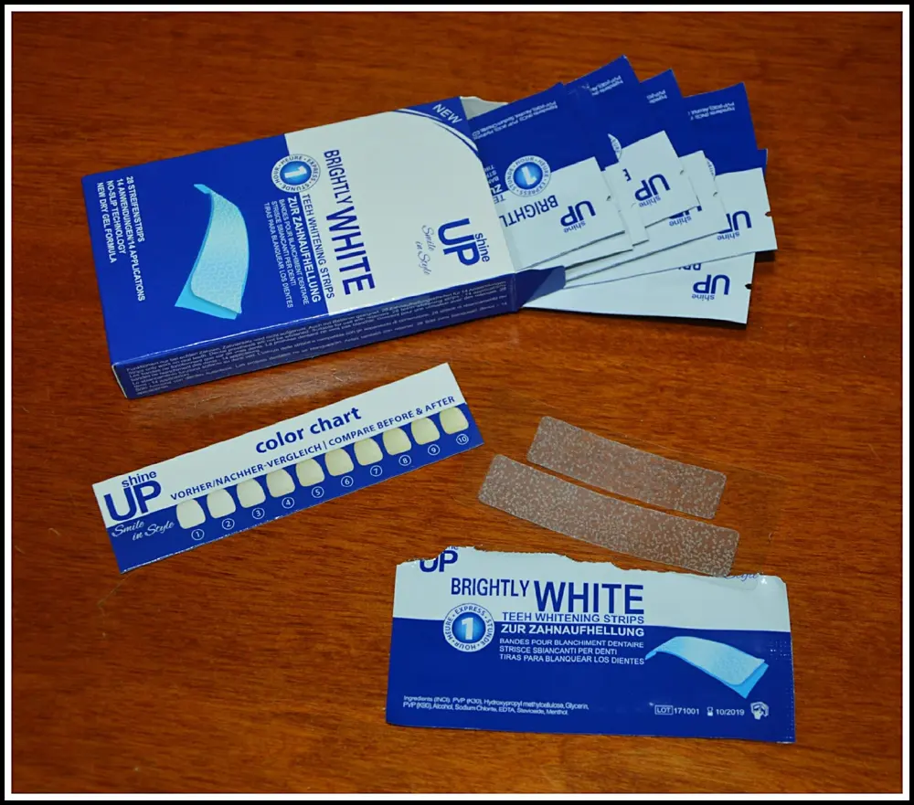
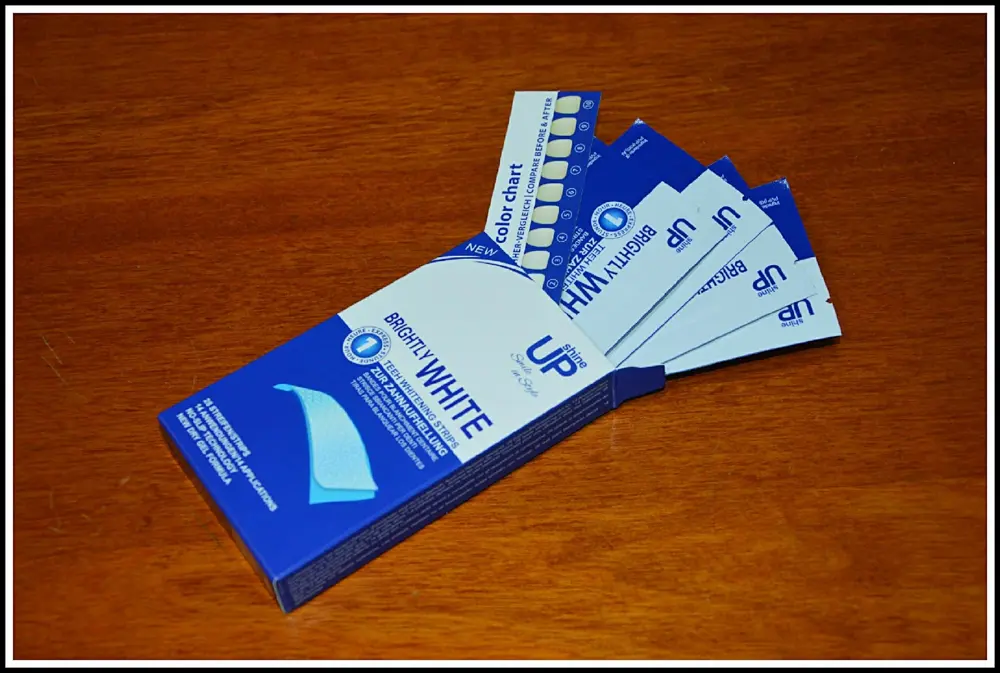

strisce sbiancanti - Whitestrips
Dopo aver visto in giro per il web tante strisce sbiancanti, non ero molto convinta dell'efficacia. Ho voluto provare queste striscette sbiancanti perchè leggendo le tante recensioni, a differenza delle altre, mi hanno incuriosito e non poco.

Vi dico subito che ho provato le strisce per 15 giorni, tutte le sere dopo cena.
Si presentano come due strisce trasparenti, una più larga per la dentatura superiore ed una un pò più stretta per i denti inferiori.

- Asciugare prima la saliva in eccesso sui denti e poi applicarle.
Mi raccomando, aderite bene passando le dita sui denti per più volte per far attaccare bene tra gli spazi la striscetta.
- Aspettate 40 minuti con bocca chiusa.
Vi consiglio bocca chiusa perchè durante il trattamento avrete un eccesso di salivazione appiccicosa perchè le strisce hanno una sostanza, appunto sbiancante, al gusto di menta.
Dopo aver aspettato 40 minuti tirate non in modo violento le strisce e spazzolate bene i denti.
Sentirete già una sensazione diversa perchè i denti saranno super puliti anche in zone più nascoste.
Si consiglia di usare il trattamento prima di lavare i denti perchè il fluoro del dentifricio ferma la penetrazione dell'agente sbiancante nel smalto dei denti.
Inoltre, è preferibile se si evitano caffè e nicotina nelle ore successive poichè lo sbiancamento rende la superficie dei denti leggermente 'porosa' e propensa ad assorbire il colore degli alimenti, quindi si rischia di non ricevere poi un effetto positivo.
Il motivo infine, del perchè non bisogna eccedere nella durata del trattamento è perché potrebbe irritare le gingive e indebolire i denti.
Il mio colore non è diventato ovviamente, da com'è a bianchissimo ma ho notato che si sono leggermente sbiancati e sono soddisfatta poichè il mio colore naturale di base già è più scuro.

Se ricomprerei le striscette sbiancanti? Sì, lo farei. E consiglierei senz'altro questo trattamento.
Prezzo: 12,99€
Per acquistare CLICCARE QUI